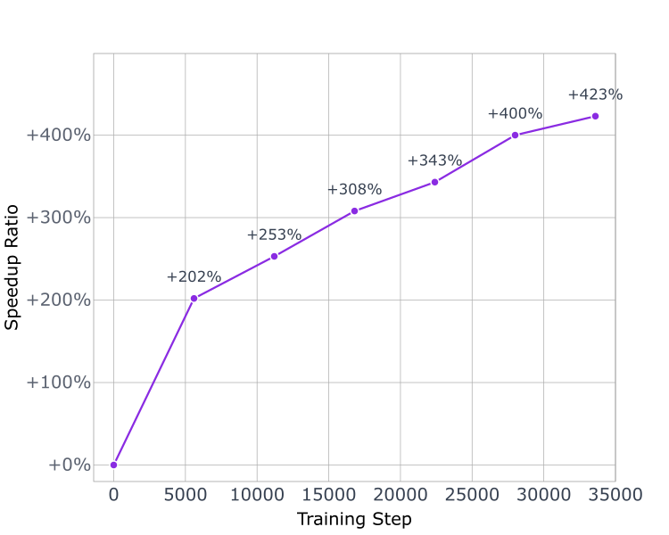
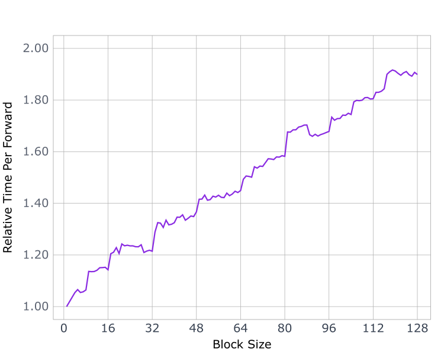
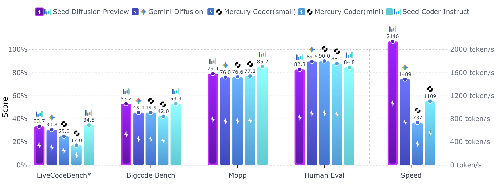

Seed Diffusion：一个推理很快的大规模扩散语言模型
Seed Diffusion: A Large-Scale Diffusion Language Model with High-Speed Inference
阅读状态、进度与收藏只保存在你的浏览器里。本页引用的第三方网页均于 2026-10-20 查阅。
逐节精读
这部分按报告的章节顺序，用本站自己的话把整份报告从头讲一遍。读懂某个概念需要的背景知识，会在第一次用到它之前单独讲清楚（青色框）。每个结论都尽量说出“因为什么、所以什么”。标“推算”的数字是本站根据报告或公开规格算出来的，不是报告原话；标“读图约值”的数字是从原文图上读出来的近似值。报告以 CC BY 4.0 许可发布，所以页面上放了原文的图 1 与图 2，其余是本站画的示意图。每节末尾有英文原文的链接。
0 导读：一份“预览版”报告，三个训练想法和一个速度数字
我们平时用的大语言模型属于自回归模型（autoregressive，下文简称 AR）：它一次只写一个 token（大致是一个词或半个词），必须等前一个写完，才能写下一个。扩散语言模型换了一种写法：先摆出一段全是占位符 [MASK] 的“画布”，然后一轮一轮地把画布上的位置填成真正的 token，每一轮可以同时填好几个位置。如果每轮平均能填好很多个位置，生成同样长的回答所需的轮数就比 AR 少，单个用户等待的时间就可能更短。
2025 年上半年，两家公司先后用产品证明了这条路在速度上的潜力：Inception Labs 的 Mercury Coder（2 月上线，6 月发布技术报告），以及 Google DeepMind 的 Gemini Diffusion（5 月公布，只有演示和模型页）。2025 年 7 月 31 日，字节跳动 Seed 团队在官网发布了 Seed Diffusion Preview，一个只做代码生成的实验性扩散语言模型；8 月 4 日，团队把这份技术报告放上了 arXiv。报告最醒目的数字是：在 H20 GPU 上推理速度达到每秒 2,146 个 token，同时在一组代码基准上与同等规模的 AR 模型“表现相当”。项目页还多给了一句报告里没有的话：比同等规模的 AR 模型快 5.4 倍。
报告正文很短，方法部分大约两页。它提出了三个训练上的想法和一个推理方案：
- 两阶段课程：前 80% 的训练步用标准的掩码噪声，后 20% 再加入“编辑噪声”（随机插入、删除、替换少量 token），逼模型学会检查那些没被遮住、但可能是错的 token。
- 受限顺序训练：掩码扩散模型在训练时要学会“按任意顺序”生成，作者认为其中很多顺序对代码是有害的。他们让模型自己生成大量候选的生成轨迹，按证据下界（ELBO）挑出最好的，再用这些轨迹微调模型。
- on-policy 学习：在模型自己采样出的轨迹上训练，直接以“减少去噪步数”为目标，同时用一个验证器保证答案仍然合理。
- 块级半自回归推理：一块一块地生成，块内并行去噪，前面已完成的块用 KV 缓存；再加上一个专为扩散采样优化的内部推理框架。
同样重要的是报告没有写的东西。模型有多大（表里的“Size”一栏写的是“-”）、训练用了多少 token、是否从某个 AR 模型的权重改造而来、采样器每步定下几个 token、块长取多少、2,146 是用几张 H20、多大的批、什么精度测出来的，报告都没有说。报告也没有任何消融实验，也就是说，三个训练想法各自贡献了多少，没有数据。模型权重没有公开，只有一个在线 demo。
所以，读这份报告有两件事要做。第一件是弄懂三个训练想法各自针对什么问题，这些问题在扩散语言模型里都是真实存在的，本站其他精读页也从不同角度讨论过。第二件是判断它给出的数字值多少：哪些是厂商自测的，每个比较拿谁来比，比较双方在硬件、数据、规模上对齐了什么。第 7.5 节“结果的份量”专门回答第二件事。
读完这部分，你应该能回答这几个问题：
- 掩码扩散模型为什么会“盲目相信”没被遮住的 token？编辑噪声怎样纠正这个毛病？
- “掩码扩散等价于任意顺序的自回归”是什么意思？为什么生成顺序对代码尤其重要？
- on-policy 学习是什么？为什么“直接最小化步数”训练不稳定，编辑距离为什么能当它的替身？
- 块级半自回归加 KV 缓存，怎样把“步数少”变成“墙钟时间短”？块长该怎么选？
- 2,146 token/秒是在什么条件下测的？它和 Mercury 的 1,109、Gemini Diffusion 的 1,479 能直接比吗？H20 和 H100 有什么不同？
- 和用同一条数据管线训练的 AR 模型 Seed-Coder-8B-Instruct 相比，质量差多少，哪里更好？
1 引言与相关工作：扩散“理论上快、实际上慢”，卡在两件事上
AR 模型每生成一个 token，都要把整个网络从头到尾算一遍，这叫一次前向计算。网络的参数放在 GPU 的显存里，计算单元在芯片上，所以每做一次前向，全部参数都要从显存读一遍。以本页反复出现的对照模型 Seed-Coder-8B 为例，它有 82 亿个参数（Seed-Coder 报告 §2.3）；每个参数用 BF16 格式存储时占 2 字节，参数总共约 16.4 GB。H20 的显存带宽约为每秒 4.0 TB（第三方规格汇总，见 7.4），把 16.4 GB 读一遍至少要约 4.1 毫秒（推算）。所以只服务一个用户、不用任何技巧时，这个模型在一张 H20 上每秒最多生成约 244 个 token（推算，忽略了注意力和其他开销）。
这 4.1 毫秒里，计算单元其实大部分时间在等数据：一次前向只为 1 个 token 做约 2 × 82 亿次运算，H20 的 BF16 算力约为每秒 148 万亿次，算完只要约 0.11 毫秒（推算）。既然读参数的时间远远多于计算的时间，那么在同一次前向里多处理几个位置，耗时几乎不变。扩散模型想利用的，正是这部分空闲的算力：如果一次前向能同时定下好几个 token，单个用户的生成速度就能成倍提高。本站 Mercury 精读 §1.1 用 H100 把这笔账算得更细。
“并行生成”并不是扩散模型才有的想法。在机器翻译领域，2018 年前后就出现了非自回归（non-autoregressive，NAR）模型：它一次就把整句译文的所有位置同时预测出来。后来的 Mask-Predict（2019）改成多轮迭代：每轮把最没把握的位置重新遮住再预测。字节跳动 AI Lab 的研究者参与提出了 GLAT（ACL 2021）和 DA-Transformer（ICML 2022）等改进，本报告的资深作者 Hao Zhou 是这两篇论文的作者之一，报告在相关工作里引用了它们。
同一个输入往往有好几种都正确的输出。比如“谢谢”可以译成 “Thank you”，也可以译成 “Thanks a lot”。AR 模型一个词一个词地写，第一个词定成 “Thank”，第二个词自然就跟着选 “you”。并行模型却是对每个位置各自独立地预测：第一个位置在 “Thank” 和 “Thanks” 之间犹豫，第二个位置在 “you” 和 “a” 之间犹豫，如果两个位置各自选了不同答案里的词，就会拼出 “Thanks you” 这种两种说法都不是的东西。输出的分布有好几个“峰”，而独立预测会把不同的峰混在一起，这就是并行生成的多峰问题。NAR 翻译常用的解法是先用一个 AR 老师把训练数据重新翻一遍，让每个输入只对应老师给出的那一种说法，相当于把多余的峰“过滤”掉。第 5 节讲的 on-policy 学习，作者认为效果就和这种“模式过滤”相似。
报告认为，这些早期的 NAR 方法虽然在翻译等具体任务上表现不错，却缺少严格的“密度估计”基础：它们没有给出一个能算出“这句话的概率是多少”的概率模型，所以没法成为通用的语言模型。离散扩散模型（D3PM、SEDD、MDLM 等）补上了这一点：它们优化的是对数似然的一个下界，也就是证据下界（ELBO），因此是有完整概率解释的语言模型；LLaDA 又证明了这类模型可以扩展到 80 亿参数。Mercury 和 Gemini Diffusion 则从产品上表明，扩散模型可以在质量差距不大的前提下快很多。
在这个背景下，报告提出了两个障碍。
第一个障碍是生成顺序。离散扩散模型可以按任意顺序生成 token，这在理论上很有吸引力；但自然语言绝大多数时候是按顺序处理的。如果训练信号是“所有顺序一视同仁”，那么模型要花大量力气去学那些不自然的顺序，学习效率会变低，甚至伤害语言建模的表现。第 4 节会详细解释这件事。
第二个障碍是推理效率。扩散模型虽然不是一个一个地生成，但它要迭代很多步去噪，而且质量对步数很敏感：步数一少，质量就掉。这样一来，它相对 AR 的主要优势（并行）在实践中就被抵消了。为了把这件事说清楚，本站用一个简化的记账公式来贯穿全页。
这里 \(T(1)\) 是一次只处理 1 个新位置的前向耗时，也就是 AR 每生成一个 token 的耗时；\(T(b)\) 是一次处理 \(b\) 个位置（比如一整块画布）的前向耗时；\(m\) 是扩散模型平均每次前向能定下的 token 数，文献里常叫 TPF（tokens per forward）。公式说明，扩散要比 AR 快，必须同时做到两件事：\(m\) 要大，也就是每步多定几个 token；\(T(b)/T(1)\) 要小，也就是一次处理很多位置时，前向不能变得太贵。报告的三个训练想法主要在提高 \(m\)，推理方案和基础设施主要在压低 \(T(b)\)。
- 这个公式是本站的简化记账：它忽略了处理提示词（预填充）的时间，也假设两种模型每次前向读的参数一样多、缓存条件一样好。真实系统里这些假设都可能不成立，第 6、7 节会具体讨论。
- 这里的“并行”指的是同一个请求内部的并行。服务端把很多用户的请求拼成一批一起算，是另一种利用空闲算力的办法（见 vLLM 精读 §2.3）。批开得越大，留给扩散“同一请求内并行”的空闲算力就越少。
2 模型的底子：只用代码数据的稠密 Transformer
报告说，作为 Seed Diffusion 系列的第一个实验模型，Preview 版专注于代码生成，所以直接采用了开源项目 Seed-Coder 的数据管线和处理方法，而且只用代码和代码相关的数据。网络是一个标准的稠密 Transformer，也就是每个 token 都经过全部参数，而不是像混合专家（MoE）模型那样只激活其中一部分。作者还说明，这个初始版本有意不做长思维链（LongCoT）推理这类复杂功能，先建立一个又强又快的基线。
Seed-Coder 是字节跳动 Seed 在 2025 年 6 月开源的一组 8B 代码模型，包括基座、指令和推理三个版本（arXiv 2506.03524）。它的特点是数据管线以模型为中心：主要用大模型给代码数据打分、过滤，尽量减少人工规则，最终整理出约 6 万亿 token 的代码预训练语料。网络结构沿用 Llama 3：82 亿参数、隐藏维度 4096、使用分组查询注意力（GQA）；层数在 Seed-Coder 报告里写作 36 层，但官方 Hugging Face 配置是 32 层（32 层也正好对得上 82 亿参数）。指令版本在基座上做了监督微调和偏好优化。Seed Diffusion 报告里的评测协议和主要对照数字，都取自 Seed-Coder 报告。
报告没有说明的是：Seed Diffusion 有多少参数（所有结果表里它的“Size”一栏都是“-”）、多少层、上下文多长、训练了多少 token，以及是否用 Seed-Coder 的权重初始化。最后这一点并不是细节。2025 年以来，很多扩散语言模型都是从现成的 AR 模型改造而来的，例如 Dream 从 Qwen2.5 出发，LLaDA2.0 从 Ling 2.0 出发；后来字节跳动 Seed 参与的 Stable-DiffCoder（2026 年 1 月）也明确从 Seed-Coder-8B 的检查点出发。从 AR 权重出发和从零训练，需要的数据量和最终质量可能相差很大，而报告对此没有交代。
正因为数据管线相同，Seed-Coder-8B-Instruct 是理解 Seed Diffusion 结果时最重要的参照：两者来自同一个公司、用同一条数据管线、用同一套评测协议，报告的图 1 也把它放在一起比较。但两者的参数量、训练 token 数、算力和后训练方法是否相同都不知道，所以它是“同源”的参照，不是“严格对照”的实验。
3 两阶段课程：先学“填空”，再学“校对”
3.1 掩码扩散：前向加掩码、反向猜回去、按噪声水平加权
前向过程负责“加噪”：给定一段干净的序列 \(\mathbf x_0\) 和一个时间 \(t\in[0,1]\)，每个位置独立地以概率 \(\gamma_t\) 被换成特殊符号 [MASK]（记作 \(\mathbf m\)），以概率 \(1-\gamma_t\) 保持原样。\(\gamma_t\) 叫噪声调度，随 \(t\) 单调增加：\(t=0\) 时什么都没遮，\(t=1\) 时全部被遮住。报告的式 (1)(2) 写的就是这件事：
[MASK] 一旦出现就不会再变回别的 token，所以这种扩散也叫吸收态扩散。反向过程由神经网络完成：它读入一段部分被遮住的序列，对每个被遮住的位置给出“原来是哪个 token”的概率分布。生成时从全是 [MASK] 的画布出发，一轮一轮地把一部分位置定下来。
训练目标来自对数似然的证据下界（ELBO）。在连续时间下，它化简成“只在被遮住的位置上算交叉熵，再按噪声水平加权”。报告的式 (5) 是：
第二项里的 \(\mathbf 1[\cdot]\) 表示只统计被遮住的位置，\(\gamma_t'\) 是调度对时间的导数。最常见的线性调度 \(\gamma_t=t\) 下，权重就是 \(1/t\)，和 LLaDA 的损失一样。这个权重的作用可以用一个例子看出来：一块 256 个 token 的画布，\(t=0.1\) 时平均只有约 25.6 个位置被遮住，每个位置的权重是 10，合计约 256；\(t=0.8\) 时平均有约 204.8 个被遮住，每个位置的权重是 1.25，合计也约 256（推算）。也就是说，加权让每个噪声水平对总损失的贡献大致相当，遮得少的样本不会因为“题目少”而被忽视。第一项“重建项”对应 \(t\to 0\) 时几乎没遮的情形，下面马上会看到，Seed 正是在这一项上做了改动。完整推导见 MDLM 精读 §3。
报告还说明了一个实现细节：网络在任何位置都不允许预测 [MASK]，做法是把 [MASK] 对应的 logit 加上 \(-\infty\)。这和 MDLM 的做法一致，因为反向过程的目的就是把 [MASK] 变回真实 token，预测出 [MASK] 没有意义。
3.2 不把“没遮住的 token”直接抄到输出：伪相关从哪来
MDLM、MD4 等工作在上面那个细节之外，还有一个配套做法，报告称之为 carry-over unmasking（可以译作“未遮位置直接沿用”）：凡是输入里没被遮住的位置，模型的输出直接照抄输入，不需要也不允许改。这样一来，损失只在被遮住的位置上计算，重建项恒为零，训练目标的方差更小，困惑度也更好。
Seed 选择不这样做（报告 Remark 3.1）。作者的理由是：纯掩码训练里，每个位置要么是正确答案，要么是 [MASK]，从来不会出现“看得见、但是错的”token。模型因此会学到一个在训练数据里永远成立、在推理时却不成立的规律：“看得见的 token 一定是对的”。这就是报告说的伪相关。推理时，画布上看得见的 token 有一部分是模型自己在前几步写下的，其中难免有错，尤其是一步同时定下好几个 token 的时候（第 5 节会解释为什么）。一个“盲目相信”可见 token 的模型，既不会去检查这些 token，也不会改正它们，错误就一直留在最终输出里。打个比方，一个只做过“在正确的课文上填空”的学生，从没见过错别字，自然也就学不会校对。
3.3 编辑噪声：插入、删除、替换
两段序列之间的编辑距离 \(d_{\text{Lev}}\)，是把一段改成另一段最少需要多少次“单个 token 的编辑”，编辑只有三种：插入一个 token、删除一个 token、把一个 token 替换成另一个。比如把 return a + b 改成 return a - b 只需替换一次，距离是 1；把 f(a, b) 改成 f(b) 要删掉 a 和 ,，距离是 2。编辑距离衡量的是“两段文字差了多少处”，后面第 5 节还会用到它。
最后 20% 的训练步里，作者在掩码噪声之外增加了一种基于编辑的前向过程 \(q_{\text{edit}}\)。它从干净序列出发，依次随机施加 \(k_t\) 次编辑操作（插入、删除、替换），得到加噪后的序列（式 3）：
编辑次数按序列长度的一个比例来定（式 4）：\(k_t=\lfloor|\mathbf x_0|\cdot\alpha_t\rfloor\)，其中 \(\alpha_t\) 是调度，被限制在 \([0,\,0.1]\) 之间。也就是说，最多只改动 10% 的 token：一段 512 个 token 的代码最多被编辑 51 次（推算）。作者说限制得这么小，是为了保留掩码前向过程的“密度估计能力”，即编辑噪声只是辅助，主体仍然是有似然解释的掩码扩散。施加 \(k_t\) 次编辑并不保证编辑距离恰好是 \(k_t\)，比如先插入再删除同一个位置就互相抵消了；作者认为这只是近似地控制了“信噪比”，但简单、可扩展。（报告原文在这里把 Levenshtein 误写成了 “langevin distance”。）
有了两种前向过程，总的训练目标（式 6）就是把式 (5) 里的重建项换成编辑噪声下的去噪损失：
第一项要求模型从一段“几乎干净、但有少量看不出来的错误”的序列出发，恢复出整段原文；第二项就是原来的掩码损失。把编辑损失放在重建项的位置上很自然：重建项本来对应的就是“几乎没加噪”的输入，而编辑噪声最多只改 10%，正好也是“几乎干净”的输入，只是其中藏着错误。因为不再沿用未遮位置，所有位置都要输出预测，模型在训练中就被迫重新评估每一个可见的 token。作者还说，这种增广改善了模型的校准（模型说有九成把握时，确实九成是对的），并消除了采样中的一些异常行为，例如重复同一段内容。
为什么是“先掩码、后编辑”的课程，而不是从一开始就混着用？报告的说法是：纯掩码目标方差低（每个位置要么是正确答案、要么是 [MASK]），而且有清楚的似然解释，适合作为大规模训练的主体；编辑噪声是用来纠正它带来的偏差的“增广”，放在最后一段训练里就够了。项目页把这两个阶段概括为“从模式填充到逻辑编辑”。
- 没有消融。报告没有给出“只做掩码训练、不加编辑阶段”的模型，所以编辑噪声到底带来了多少提升，报告里没有数据。项目页说“引入编辑阶段后”，模型在代码编辑基准 CanItEdit 上比 AR 模型高 4.8%（54.3 对 50.5）。这句话有两个问题：一是 54.3 − 50.5 = 3.8 个百分点，相对提升约 7.5%（推算），两种算法都得不到 4.8；二是 50.5 是另一个模型（Seed-Coder-8B-Instruct）的分数，不是“去掉编辑阶段的 Seed Diffusion”的分数，所以这个差距不能归功于编辑阶段。
- 长度变了怎么办，没有说。插入和删除会改变序列长度，而网络是对每个位置分别输出一个分布。加噪序列和原文长度不同、位置对不上时，\(\log p_\theta(\mathbf x_0\mid\mathbf x_t)\) 具体怎么算，报告没有交代。插入的 token 和替换成的 token 从什么分布里抽，报告也没有说。
- 推理时怎么“改错”，也没有说。训练让模型具备了评估可见 token 的能力，但采样器会不会、在什么条件下把已经写下的 token 改掉，报告没有描述。后来公开了细节的模型，例如 LLaDA2.1 的“token 到 token”编辑，就明确给出了改写已写 token 的阈值规则（见本页“后来怎么样了”）。
英文原文 §3.1 ↗ · 相关：MDLM 精读（carry-over 与 SUBS 参数化）· LLaDA 精读
4 受限顺序：不让模型平均地学会所有生成顺序
4.1 掩码扩散等价于“任意顺序的自回归”
先看最简单的情形：从全是 [MASK] 的画布出发，每一步只揭开一个位置。对一段长度为 \(d\) 的序列，揭开的先后次序就是 \(d\) 个位置的一个排列 \(\pi\)：先揭开 \(\pi(1)\)，再揭开 \(\pi(2)\)……每一步，模型都是在“已揭开的那些 token”的条件下，预测下一个要揭开的位置。这和 AR 模型一模一样，只不过 AR 的顺序固定是从左到右，而这里的顺序可以是任意排列。
Hoogeboom 等人 2021 年提出的自回归扩散模型（ARDM）指出了这层关系，后来的 RADD 等工作又严格证明了：掩码扩散的 ELBO 恰好等于“对所有顺序取平均”的任意顺序自回归目标（报告式 7）：
这里 \(S_d\) 是 \(d\) 个位置的全部排列，\(U(S_d)\) 表示从中均匀地抽一个；\(\mathbf x_{\pi(<r)}\) 是在这个顺序里排在第 \(r\) 个之前、已经揭开的 token。3 个 token 有 6 种顺序；一块 256 个 token 的画布有 256! 种，约为 \(10^{507}\)（推算）。训练时随机遮住一部分位置，相当于随机抽了一个顺序的某一步来练习，所以在期望上，所有顺序被同等对待。
报告的式 (8) 给出了从时间 \(s\) 到更晚的时间 \(t\) 的转移概率：没被遮的位置以 \(\frac{1-\gamma_t}{1-\gamma_s}\) 的概率继续保持、以 \(\frac{\gamma_t-\gamma_s}{1-\gamma_s}\) 的概率被遮住，已经是 [MASK] 的位置保持不变。换句话说，每个 token 在一个随机时刻被遮住，之后一直是 [MASK]。把这个过程反过来看，从全遮到全开的一条轨迹 \(\tau=\{\mathbf x_K\to\cdots\to\mathbf x_0\}\) 就记录了一种揭开顺序；一步揭开多个位置时，它对应的是“一次定下一组”的顺序。
4.2 为什么顺序对代码很重要
作者认为，从左到右的 AR 训练只需要学一种顺序，而扩散训练必须学所有顺序，其中很多顺序是多余的、有害的，或者与语言本身的结构不符。项目页举的例子是：代码虽然不是严格从左到右的，但有很强的因果依赖，比如变量要先声明后使用。下面这个两行代码的例子说明了为什么某些顺序难学。
x）。在顺序 A 里它几乎没有不确定性；在顺序 B 里它变成了一道“没有线索的猜谜”。任意顺序的训练目标要求模型把这两种情形都学好，而后一种情形在真实生成时很少有用。这类“没有线索的条件预测”在理论上已经被仔细分析过。本站 Train for the Worst, Plan for the Best 精读讲到，掩码扩散模型在训练时会遇到一些计算上非常难的子问题，这些子问题占用了模型的容量，而模型训练好之后，它在不同顺序上的误差也很不均衡；那篇论文的对策是在推理时自适应地挑选顺序。Seed 的对策则是在训练时就不再平均地对待所有顺序。报告还提出了一个观察：即使在代码这种“从左到右偏好不强”的数据上，扩散训练的模型仍然明显落后于 AR 模型。对代码生成顺序的定量分析，可以参看同期的 DiffuCoder 精读。
4.3 Seed 的做法：让模型自己产出轨迹，挑最好的，再蒸馏回去
受限顺序训练在两阶段扩散学习之后进行，项目页称之为“后训练”阶段。按报告的描述，它分三步：
- 生成候选。对每一个样本，用预训练好的扩散模型大规模地生成一个候选轨迹池，每条轨迹对应一种揭开（生成）顺序。
- 按 ELBO 挑选。对每条候选轨迹计算 ELBO，保留 ELBO 最大的那些。直观地说，一条轨迹的 ELBO 是“沿着这个顺序，每一步揭开的 token 在模型看来有多大概率”的对数之和，它是这段序列对数似然的一个下界。ELBO 越高，说明模型觉得按这个顺序生成越顺手，这个顺序越“自然”。
- 蒸馏。把挑出来的高质量轨迹集合记作 \(\mathrm T\)，用式 (9) 微调模型：
式中 \((\mathbf x_i,\mathbf x_0)\) 是从某条挑中的轨迹上取出的一个中间状态和它的终点，\(\lambda(\mathbf x_i)\) 是平衡不同噪声水平的权重（作用类似 3.1 里的 \(\gamma_t'/\gamma_t\)），\(f\) 是一个类似 \(q_{\text{edit}}\) 的增广函数，也就是在中间状态上再加一点编辑噪声。和普通掩码训练相比，区别在于训练输入的来源：普通训练的中间状态是随机遮出来的，覆盖所有可能的位置组合；这里的中间状态只来自“好轨迹”上真正会出现的那些状态。模型的容量因此集中在它推理时实际会走的那些顺序上。报告在 §3.4 还把块级推理时 KV 缓存的稳健性归功于这一步（见第 6 节）。
- “样本”指什么不清楚。报告说“对任意给定的样本”生成候选轨迹。一种理解是：对数据里的一段真实代码 \(\mathbf x_0\)，让模型探索不同的揭开顺序，并计算每种顺序下的 ELBO；另一种理解是：对一个提示，让模型自己生成完整回答，连同轨迹一起筛选。项目页说的是“基于模型感知，合成并筛选符合偏好的生成轨迹”。两种理解对训练数据的含义很不一样，报告没有给出足够的信息来区分。
- 同样没有消融。受限顺序训练前后模型的质量或速度变化，报告没有给出任何数字。
- 可能的代价没有评估。把模型的“顺序偏好”收窄，可能会削弱扩散模型按任意顺序生成的能力，例如在中间填空（FIM）这类必须先看后文的任务上。报告没有测填空任务，所以无从判断。
英文原文 §3.2 ↗ · 相关：Train for the Worst, Plan for the Best 精读 · 旧版 RADD 条目 · 旧版：任意顺序的利与弊
5 On-policy 学习：直接把“走几步”当成训练目标
5.1 为什么少走几步会掉质量
报告开门见山：扩散模型理论上能并行解码，实践中却很难兑现。原因有两面。一面是一次并行的去噪步本身很贵，必须一次定下足够多的 token 才能摊薄这个开销，这就是第 1 节公式里的 \(m\) 和 \(T(b)/T(1)\)。另一面是减少总步数（也就是每步多定几个）会让质量严重下降，掩码扩散尤其如此，报告在这里引用了 LLaDA 的观察。
网络对画布上每个位置给出的分布是各自独立的：它告诉你“这个位置最可能是什么”，但不告诉你“这个位置和那个位置怎样搭配”。如果同一步里定下的两个位置互相强相关，就可能各自选了一个合理的值，拼在一起却不合理，这和第 1 节讲的“多峰问题”是同一回事。步数越少，每步要同时定下的位置越多，这种冲突就越频繁。所以一个好的采样器只会在模型很有把握的位置上并行，没把握的位置留到后面的步里，等相关的位置定下来之后再决定。本站 Fast-dLLM 精读 §2.3 有更完整的讨论。
下面这个交互图把这件事放在一个订机票的小例子里：出发城市和到达城市各由两个词组成，两个词必须配对。把步数调少、或者把块调大，“New Diego” 这种不存在的城市出现的概率就会上升。
从这个例子可以看出 on-policy 学习想做的事：如果能让模型在更多位置上“很有把握”，同时又不在相关的位置上犯错，采样器就能在每一步定下更多的 token，步数自然就少了。
5.2 目标：步数减去验证器的分数
前面几节的训练，输入都来自数据：要么是对真实代码随机加噪，要么是事先生成、筛选好的轨迹。这叫 off-policy，训练数据和模型此刻的行为无关。On-policy 则是指训练数据由模型当前的参数自己采样出来：先让模型按自己的采样方式生成一遍，再根据生成的结果调整参数，然后用新的参数再生成、再调整。强化学习里的策略梯度方法就是 on-policy 的。它的好处是训练时看到的状态，正好是模型推理时真正会遇到的状态，不会出现“训练时只见过干净的输入，推理时却要面对自己犯过错的输入”这种不匹配。打个比方，off-policy 像看别人开车的录像学驾驶，on-policy 像自己上路开，教练根据你开出来的结果纠正你。
报告的 on-policy 目标是（式 10）：
这里 \(\tau=\{\tau[K],\dots,\tau[i],\dots,\tau[0]\}\) 是从全是 [MASK] 的 \(\tau[K]\) 出发、按某种“策略性的采样方式”生成到最终答案 \(\tau[0]\) 的一条轨迹，\(|\tau|\) 是它走了多少步，\(V(\cdot)\) 是一个基于模型的验证器，给最终答案打分，保证采样“总能收敛到一个合理或正确的结果”。目标的意思很直白：步数越少越好，但答案的得分不能掉。
这里有一个隐含的前提值得说清楚。如果采样器每次都走固定的步数，\(|\tau|\) 就是常数，训练无从改变它。所以这个目标要有意义，采样器必须是自适应的，例如像 Fast-dLLM 那样，只要某个位置的置信度超过阈值就把它定下来。在这种采样器下，模型越有把握，每步定下的位置越多，轨迹就越短。报告只说用了“策略性的采样方式”，没有说明具体规则，上面的推断是本站根据目标函数的形式做出的。
验证器的分数 \(V(\tau[0])\) 是对采样出来的离散结果打的分，没法直接对模型参数求导。对数导数技巧（强化学习里叫 REINFORCE）绕开了这个问题：
右边的意思是：采样一批轨迹，得分高的轨迹，就提高模型生成它的概率；得分低的，就降低。它只需要能算出“模型生成这条轨迹的对数概率”的梯度，而不需要验证器本身可导。报告说式 (10) 中与验证器有关的那一项就用这个技巧优化。
5.3 编辑距离做替身：步数越少，相邻状态差得越多
报告说，直接最小化轨迹长度会让训练动态不稳定。一个可以理解的原因是：\(|\tau|\) 是一个整数，模型参数的微小变化通常不会改变它，偶尔改变时又是一下跳一整步，用它当训练信号既稀疏又粗糙。于是作者改为优化一个“渐进的”替代损失，依据是下面这个关系（式 11）：
直观地说：从全遮到写完，画布总共要发生的变化是固定的（每个位置都要从 [MASK] 变成一个 token）。如果步数少，平均每一步就要改动更多的位置，轨迹上任意两个状态之间的编辑距离就更大，它的倒数就更小。所以“让轨迹上的状态彼此差得多一些”和“让步数少一些”是同一个方向，而前者是一个更平滑、更细粒度的量。下面用 8 个 token 的一块画布算一遍。
报告没有说明这个替代损失具体怎么计算梯度（编辑距离本身也是对离散状态算的，不可导），也没有解释“渐进”是指什么，例如是否随训练逐步收紧目标。项目页只补充了一句：这个损失“鼓励模型以更高效的方式收敛”。
5.4 训练曲线（原文图 2a）与“模式过滤”

这张图是报告里唯一能看出 on-policy 学习效果的证据。它说明这一步训练确实大幅减少了达到同样结果所需的步数。但图上只有速度，没有质量：训练过程中验证器的得分、或者任何基准分数是怎样变化的，报告没有给出。所以“速度提高 5 倍而质量不掉”这一点，只能从最终模型的基准成绩间接推断，不能从这张图里读出来。
作者还指出，这个过程的效果类似于 NAR 文献中的模式过滤。结合第 1 节讲的多峰问题，可以这样理解：on-policy 训练会奖励那些“能很快收敛、又能通过验证器”的轨迹，压低那些犹豫不决、在几种写法之间摇摆的轨迹。久而久之，模型对同一个提示的输出分布会收窄到少数几种写法上，在每个位置上都更“笃定”，并行定下的 token 之间也就更少冲突。项目页的说法是，训练“隐式地修剪掉”了低质量或低效率的生成路径。
- 图 2(a) 的 +423% 和项目页的 5.4 倍不是同一个比较。前者是同一个扩散模型在 on-policy 训练前后的速度之比；后者是项目页说的“相对同等规模 AR 模型”的速度之比。两者数值接近，但基线完全不同，不能互相印证。
- 关键设置都没有公开：测量用的块长 \(b\)、验证器是什么模型、它用什么标准打分（代码任务本来可以用单元测试，报告却说是“基于模型的”验证器）、on-policy 训练用了哪些提示。
- 收窄输出分布是有代价的。模式过滤让模型更笃定，同时也可能降低输出的多样性，例如多次采样时“至少有一次答对”的比例（pass@k）可能下降。报告只报告了单次采样的 pass@1，没有测多样性。
英文原文 §3.3 ↗ · 原文图 2 ↗ · 相关：Fast-dLLM 精读（置信度阈值采样）· d1 精读（扩散模型上的策略梯度）· 旧版：学出来的并行
6 推理与基础设施：一块一块地生成，前面的块走 KV 缓存
6.1 块级半自回归，以及“不做块专门训练”
Transformer 的每一层里，每个 token 都会算出一个 key 向量和一个 value 向量，供其他 token 做注意力时读取。AR 模型用的是因果注意力：每个 token 只看它前面的 token。所以一个 token 的 key 和 value 一旦算出来就不会再变，可以存下来反复使用，这就是 KV 缓存（见 vLLM 精读 §2.2）。有了它，AR 模型每生成一个新 token，只需要为这一个 token 做计算。
标准的扩散语言模型用的是双向注意力：画布上每个位置都能看到所有其他位置，包括后面的位置。每一步去噪之后画布变了，所有位置的 key 和 value 也都跟着变，所以严格来说每一步都要把提示词和整张画布重新算一遍，一次前向要处理成百上千个 token，\(T(b)\) 就很大。
学术界有两条缓解的路。一条是块扩散：把序列切成固定长度的块，块与块之间按从左到右的顺序生成（像 AR），块内部用扩散并行生成；训练时就用“块因果”的注意力（块内双向、块间只看前面），这样前面的块完成后，它们的 key/value 不再变化，可以精确地缓存。代表是 BD3-LM（Block Diffusion），报告引用的 ACDiT 也属于这一类。另一条是近似缓存：模型仍按双向注意力训练，推理时假装前面内容的 key/value 不变，直接复用，代表是 Fast-dLLM。LLaDA 的“半自回归”采样也是分块生成，但不使用缓存。
Seed Diffusion 的推理采用块级并行扩散采样，块与块之间保持因果顺序。生成第 \(n\) 块时，反向过程写作 \(p_\theta(\mathbf x_t\mid\mathbf x_s,\ \mathbf x^{B_0,\dots,B_n})\)，其中 \(\mathbf x^{B_0,\dots,B_n}\) 表示之前已经生成的块（\(\mathbf x^{B_0}\) 为空）。前面的块用 KV 缓存提供条件。报告认为这种“半自回归”是在质量和效率之间取得平衡的成熟技术。
与 BD3-LM 不同的是，Seed 没有做针对块的专门训练，理由是保留灵活性：推理时可以任意划分块的大小和位置。由此推断（报告没有明说注意力的具体形式），模型是按普通的扩散方式训练的，推理时缓存的前文表示和训练时并不完全一致，这就是报告承认的“可能引入偏差”。作者说他们在经验上没有观察到生成质量的明显下降，并推测这要归功于第 4 节的受限顺序蒸馏。一种可能的解释是：受限顺序训练让模型习惯了“大体从前往后”的生成轨迹，前文在后文出现之前就基本定型，用缓存近似带来的误差因此较小。这只是本站的理解，报告没有给出证据。
6.2 块长怎么选（原文图 2b）
算法之外，报告说他们还做了“整体性的系统优化”：使用内部的基础设施框架，其中有专门针对扩散采样的优化。这个框架是什么、做了哪些优化，报告没有说。报告只给出了一张图，说明块长对单次前向耗时的影响，并说块长是根据“单次前向的延迟”和“对应的 token 生成速率”之间的权衡来选的。

把这张图代回第 1 节的公式：速度正比于 \(m(b)/T(b)\)。块越大，每步可供挑选的候选位置越多，\(m\) 有机会更大；但 \(T(b)\) 也随之增加，而且块太大时，同一步定下的位置之间更容易冲突，质量会受影响。最优块长取决于 \(m\) 随 \(b\) 怎样增长，而报告既没有给出 \(m(b)\)，也没有说最终选了多大的块。
下面做一个思想实验，帮助感受数量级。假设项目页说的“5.4 倍”是在和一个每生成一个 token 就花 \(T(1)\) 的 AR 模型比（这是一个很强的假设，见 7.4），那么由公式 \(m=5.4\times T(b)/T(1)\) 可以反推每次前向平均要定下多少个 token：块长 16 时约 6.2 个，32 时约 6.6 个，64 时约 7.8 个，128 时约 10.3 个（推算）。也就是说，即使在最有利的假设下，Seed Diffusion 每次前向也需要稳定地定下 6 到 10 个 token，这正是 on-policy 学习要达到的效果。
第 1 节说过，一次前向的耗时由两部分中较大的那个决定：从显存读参数的时间，和真正做计算的时间。对一个用 BF16 存储的稠密模型，每个参数读 2 字节；一次前向处理 \(b\) 个位置，每个参数参与约 \(2b\) 次运算。所以“每读 1 字节做几次运算”（算术强度）大约就等于 \(b\)。当 \(b\) 小于 GPU 的脊点（算力 ÷ 带宽）时，耗时由读参数决定，基本不随 \(b\) 变化；超过脊点后，耗时开始随 \(b\) 线性增长。
H20 是 NVIDIA 面向中国市场的 Hopper 架构 GPU。按第三方规格汇总，它的显存带宽约 4.0 TB/s，比 H100 SXM 的 3.35 TB/s 还高约 19%；但 BF16 稠密算力只有约 148 TFLOPS，约为 H100（989 TFLOPS）的 1/6.7（推算比例）。所以 H20 的脊点约为 148 ÷ 4.0 ≈ 37，而 H100 约为 989 ÷ 3.35 ≈ 295（推算）。换句话说，在 H20 上“一次前向多处理几个位置几乎不加时间”的空间，只有三四十个位置；在 H100 上则有近三百个。
- 图 2(b) 只给出了相对耗时，没有绝对值，也没有说明硬件、模型大小、精度和批大小；块长最终选了多少、每步平均定下几个 token，报告都没有给出。所以无法用这张图复算 2,146 这个数字。
- “KV 缓存引入的偏差没有造成明显的质量下降”只是一句定性的话，报告没有给出“用缓存 vs 不用缓存”的对比数字。
- H20 的带宽比 H100 高、算力比 H100 低，这对 AR 和扩散的影响方向相反：AR 单请求解码主要吃带宽，在 H20 上不吃亏；扩散靠“空闲算力”并行，在 H20 上可用的空闲算力反而更少。第 7.4 节会再用到这一点。
英文原文 §3.4 ↗ · 相关：Block Diffusion 精读 · Fast-dLLM 精读 · 旧版：扩散模型的 KV 缓存
7 实验：八个代码基准、一张速度图，以及这些数字的份量
7.1 评测设置：八个基准各测什么
报告说评测协议和主要的对照模型都改编自 Seed-Coder 报告，另外加入了当时最有代表性的两个扩散语言模型 Mercury 和 Gemini Diffusion 作对照。
代码基准通常这样打分：给模型一道题（往往附带函数签名），让它写出代码，再用事先准备好的单元测试去跑，全部通过才算对。pass@1 指每道题只生成一次，通过的题目占多少比例。这种打分不需要人工判断，但对提示词格式、代码怎么从回答里抽出来、是否允许看到报错后重试，都很敏感。所以同一个模型在不同的评测脚本下，分数可能差好几分。
- HumanEval 与 MBPP：最常用的两个 Python 基础题库，前者 164 道函数题，后者是约一千道入门级编程题，报告用它们评测“基本编码能力”。
- BigCodeBench：1,140 道 Python 任务，覆盖 7 个领域，需要调用 139 个不同的库；平均每题 5.6 个测试用例、分支覆盖率 99%，强调组合多个工具完成真实任务。
- LiveCodeBench：持续从 LeetCode、AtCoder、CodeForces 收集新的竞赛题，并给每道题标上发布日期，这样就可以只用模型训练截止之后发布的题来评测，避免“考过原题”。报告说会给出全部 v1–v6 版本（共 1,055 题）和最新的 v6 切片（2025-02-01 至 2025-05-01）的结果，但正文里只出现了 v1–v6 的数字。
- MBXP：把 MBPP 的题目和测试翻译成十多种编程语言，报告的表 2 列出 13 种。
- NaturalCodeBench（NCB）：402 道来自真实用户提问的 Python 与 Java 题，覆盖 6 个领域，测试输入更复杂（包括各种文件类型和数据结构），分中文提问和英文提问两部分。
- Aider：133 道来自 Exercism 的练习，要求模型修改已有代码，而且修改结果必须按规定格式输出，能被程序自动应用，不允许人工干预。报告用的是 “whole” 格式（输出修改后的整个文件），“tries=2” 表示模型第一次没通过时，可以看到测试报错再改一次。
- CanItEdit：105 道人工编写的“按指令改代码”题，指令分为写得很明确的（descriptive）和写得很含糊的（lazy）两类。
本站核对了 Seed-Coder 报告的表 8、表 9、表 13：Seed Diffusion 报告表 1–3 里所有 AR 对照模型的数字，与 Seed-Coder 报告逐项相同。也就是说，这些对照数字不是重新跑的，而是沿用了同一个团队、同一套协议下的结果；报告只是把 StarCoder2-15B 和 Qwen2.5-Coder-14B 从 Seed-Coder 报告的“13B 以上”组挪到了“15B 以下”组。这样做的好处是协议一致，Seed Diffusion 的分数与 AR 对照的分数是可比的；但 Seed Diffusion 自己的分数仍然是团队自测，没有第三方复现。
7.2 原文图 1：四项基准与速度

这张图要表达的是：Seed Diffusion 最快，而分数和其他模型在同一档。逐项看，可以读出几件事。
和同源的 AR 模型比，四项全部略低。与 Seed-Coder-8B-Instruct 相比，HumanEval 低 2.0 分，MBPP 低 5.8 分，BigCodeBench 低 0.1 分，LiveCodeBench 低 1.1 分。图上没有给 Seed-Coder 画速度柱，所以这张图本身并不能说明 Seed Diffusion 比它快多少。
和另外两个扩散模型比，互有胜负。Seed Diffusion 在 BigCodeBench、MBPP、LiveCodeBench 上高于 Gemini Diffusion 和两个 Mercury，在 HumanEval 上却是五个模型里最低的（82.8，比 Mercury Small 低 7.2 分）。
对照数字的来源不一样。Mercury 的四个分数与它自己报告表 1 一致，其中 HumanEval 和 LiveCodeBench 由第三方 Artificial Analysis（下称 AA）测得（见 Mercury 精读 §4.3）；Gemini Diffusion 的分数来自 Google 的模型页。三方用的提示词、评测脚本都不同。LiveCodeBench 一项尤其不可比：Seed Diffusion 和 Seed-Coder 用的是 v1–v6 全部 1,055 题，Google 模型页标注的是 v6（30.9%），Mercury 用的是 AA 的题集。图注自己也承认“不知道对照模型的协议”。另外，Google 模型页（2026-10-20 查阅）写的 Gemini Diffusion 速度是每秒 1,479 个 token、LiveCodeBench v6 为 30.9%，图 1 里却是 1,489 和 30.8，两处都有出入。
7.3 原文表 1–3：编辑、多语言与真实用户问题
下表把三张表里的总分放在一起（省略了 CodeLlama-7B、CodeQwen1.5-7B、StarCoder2-15B 等较弱或缺项的模型，以及只出现在表 2 的两个大模型）。
| 模型 | 规模 | Aider（tries=2） | CanItEdit | MBXP 平均 | NCB 总分 |
|---|---|---|---|---|---|
| DeepSeek-Coder-6.7B-Instruct | 6.7B | 44.4 | 36.9 | 53.4 | 33.9 |
| Qwen2.5-Coder-7B-Instruct | 7B | 57.9 | 49.5 | 72.9 | 35.4 |
| Llama-3.1-8B-Instruct | 8B | 33.1 | 39.5 | 56.8 | 24.3 |
| OpenCoder-8B-Instruct | 8B | 30.8 | 39.0 | 68.8 | 32.5 |
| Qwen3-8B | 8B | 55.6 | 45.7 | 69.3 | 35.7 |
| Seed-Coder-8B-Instruct | 8B | 57.1 | 50.5 | 75.3 | 49.6 |
| Yi-Coder-9B-Chat | 9B | 54.1 | 50.5 | 71.8 | 42.5 |
| Qwen2.5-Coder-14B-Instruct | 14B | 69.2 | 52.9 | 79.4 | 46.4 |
| DeepSeek-Coder-V2-Lite-Instruct | 总 16B / 激活 2.4B | 52.6 | 45.2 | 72.6 | 41.8 |
| Codestral-22B | 22B | 51.1 | 52.4 | 72.1 | 42.9 |
| DeepSeek-Coder-33B-Instruct | 33B | 54.5 | 46.2 | 72.6 | 43.0 |
| Seed-Diffusion-Preview（0705） | 未公开 | 44.4 | 54.3 | 72.6 | 42.2 |
数据来自原文表 1（Aider、CanItEdit）、表 2（MBXP）、表 3（NCB），单位 %。所有 AR 对照的数字与 Seed-Coder 报告相同。
代码编辑：一项最好，一项明显落后。CanItEdit 上，Seed Diffusion 的 54.3 是表里所有模型中最高的，比 Seed-Coder-8B 高 3.8 分，也略高于 22B 的 Codestral（52.4）和 14B 的 Qwen2.5-Coder（52.9）。这是报告和项目页最强调的结果，作者把它归因于扩散模型“需要全局规划”的天然优势和编辑噪声训练。但同样是编辑任务，Aider 上 Seed Diffusion 只有 44.4，比 Seed-Coder-8B 低 12.7 分，与 DeepSeek-Coder-6.7B 持平，低于 Qwen2.5-Coder-7B（57.9）、Qwen3-8B（55.6）和 Yi-Coder-9B（54.1），只高于 Llama-3.1-8B、OpenCoder-8B 等较弱的模型。两个基准的差别在于：CanItEdit 是按一句指令改一小段代码，Aider 要求按严格格式输出整个修改后的文件，并且允许根据测试报错再试一次。报告没有讨论为什么两者差这么多，项目页只提了 CanItEdit。
多语言（MBXP）：平均 72.6，比 Seed-Coder-8B 低 2.7 分，与 Qwen2.5-Coder-7B（72.9）接近。逐语言看，13 种语言里只有 TypeScript（73.0 对 72.8）略高于 Seed-Coder-8B，PHP（74.7）和 Swift（54.2）持平，其余 10 种都更低，差距最大的是 Python（79.4 对 85.2）和 Ruby（72.5 对 78.0）。
真实用户问题（NCB）：总分 42.2，比 Seed-Coder-8B 低 7.4 分，但明显高于 Qwen2.5-Coder-7B（35.4）和 Qwen3-8B（35.7），与 Codestral-22B（42.9）相近。它的中文 Python 子项（52.9）表现不错，英文部分偏弱。
7.4 速度：2,146 是怎么报告的，和谁能比
第一种是单个请求看到的生成速度：一个用户发出请求后，回答以每秒多少个 token 的速度出现。它决定用户等多久。第二种是系统吞吐量：一台机器在满负载时，所有请求加在一起每秒生成多少个 token。它决定服务成本。两者可以差很多倍：批开得越大，系统吞吐量越高，但每个请求分到的速度可能越低。对扩散模型来说，这个区别尤其重要，因为它的优势来自“单个请求时 GPU 算力有富余”（第 1 节），而服务器一旦把很多请求拼成大批，这部分富余就被批处理用掉了。所以一个速度数字要能解读，至少要说明：什么硬件、几张卡、批大小或并发数、精度、输入输出多长、是否包含处理提示词的时间，以及 AR 对照在同样条件下是多少。
按这个标准看，三个扩散模型的速度数字是这样报告的：
| 数字 | 谁测的 | 硬件 | 负载 | 批 / 并发 | 是否含固定开销 | 同条件 AR 对照 |
|---|---|---|---|---|---|---|
| Seed Diffusion：2,146 tok/s | 字节跳动自测 | H20（几张、什么精度未写） | 八个公开代码基准（推测就是本报告的八个） | 未写 | 未写 | 报告里没有；项目页称“比同等规模 AR 快 5.4 倍”，条件未写 |
| Gemini Diffusion：1,479 tok/s（图 1 写作 1,489） | Google 自报 | 未公开 | 模型页所列各项评测的平均 | 未写 | 不含，另有 0.84 秒开销 | 没有 |
| Mercury Coder Mini / Small：1,109 / 737 tok/s | 第三方 AA | H100（卡数未披露） | AA 自有代码提示，约 1k 输入 / 1k 输出 | 一次一个请求 | 不含首 token 等待时间 | 各云服务商 API 的中位数，硬件各异 |
| 参照：DiffusionGemma（2026）约 1,479 TPS | Google DeepMind 自报 | 1 × H100，FP8 | 7 个基准平均 | batch 1 | 不含预填充 | 同一张 H100 上的 Gemma 4 AR（204）与带 MTP 投机解码的 Gemma 4（303） |
Gemini Diffusion 的数字来自 Google 模型页；Mercury 来自其报告 §3.2.1 与本站 Mercury 精读的核对；DiffusionGemma 一行据其技术报告 §6 与表 3（另见本站 旧版工业 dLLM 页），它与 Gemini Diffusion 的 1,479 只是数值巧合相同。
这张表说明了报告自己在图注里承认的事：三个数字的测量者、硬件和负载都不同，不能直接比大小。报告摘要却写着 Seed Diffusion “明显快于”同期的 Mercury 和 Gemini Diffusion，这句话与图注的保留态度是矛盾的。下面再算两笔账，说明为什么不能简单相比。
第一笔账：“不含开销”影响有多大。Gemini Diffusion 的 1,479 不含 0.84 秒的固定开销。如果要生成 1,000 个 token，总时间约为 0.84 + 1000 ÷ 1479 ≈ 1.52 秒，折合每秒约 660 个 token（推算），不到标称值的一半。Seed Diffusion 的 2,146 是否包含处理提示词等固定开销，报告没有说，所以甚至无法判断它应该和 1,479 比，还是和 660 比。
第二笔账：H20 并不是一张“更弱”的卡。很多读者会觉得“在 H20 上都能跑这么快，在 H100 上应该更快”。实际情况取决于工作负载。
| 规格 | H20 | H100 SXM |
|---|---|---|
| 显存 | 96 GB | 80 GB |
| 显存带宽 | 4.0 TB/s | 3.35 TB/s |
| BF16 稠密算力 | 148 TFLOPS | 989 TFLOPS |
| FP8 稠密算力 | 296 TFLOPS | 1,979 TFLOPS |
| 脊点（BF16，算力 ÷ 带宽） | ≈ 37 | ≈ 295 |
H100 SXM 的数字来自 NVIDIA 官方规格。H20 没有找到 NVIDIA 面向公众的规格页，这里的数字来自第三方规格汇总站点（flopper.io 等，2026-10-20 查阅），多个站点一致，但未能与官方文档核对。脊点为推算。
AR 模型单请求解码主要受显存带宽限制，所以在 H20 上并不吃亏，甚至比在 H100 上略快：一个 82 亿参数的 BF16 模型，单张 H20 上每秒最多约 244 个 token，单张 H100 上约 204 个（推算，只计读参数）。扩散模型靠的是“一次前向里多处理一些位置几乎不加时间”，而 H20 的算力只有 H100 的约 1/6.7，这个“几乎不加时间”的范围也小得多（第 6 节）。所以，“2,146 on H20”和“1,109 on H100”之间，硬件差异对两个模型的影响方向并不确定，不能简单换算。
由于 Seed Diffusion 的大小没有公开，还可以像 Mercury 精读 §5.6 那样做一个思想实验：假设它是不同大小的稠密模型，在单张 H20 上用 BF16、一次只服务一个请求，要达到每秒 2,146 个 token，每次前向至少要定下几个 token？
| 假设的模型大小 | BF16 参数大小 | 单张 H20 每秒最多前向次数 | 单张 H100 每秒最多前向次数 | 达到 2,146 tok/s，每次前向至少定下 |
|---|---|---|---|---|
| 1B | 2 GB | 约 2,000 | 约 1,675 | 约 1.1 个 |
| 3B | 6 GB | 约 667 | 约 558 | 约 3.2 个 |
| 8.2B（Seed-Coder 的大小） | 16.4 GB | 约 244 | 约 204 | 约 8.8 个 |
| 14B | 28 GB | 约 143 | 约 120 | 约 15 个 |
| 32B | 64 GB | 约 63 | 约 52 | 约 34 个 |
推算，只是思想实验：只计读参数的时间，是理想上限。用 FP8 时参数大小减半、前向次数上限约翻倍；报告说的是 “H20 GPUs”（复数），如果一个模型副本用 n 张卡做张量并行，带宽约为 n 倍（扣除通信开销）。32B 一行需要的 34 个已接近 H20 的脊点 37，那时前向耗时会开始上升，实际要求更高。
这张表的用意和 Mercury 页相同：同样是 2,146 token/秒，如果模型只有 1B 左右，一个普通的 AR 小模型也可能做到；如果它和 Seed-Coder 一样是 8B 级，那就意味着每次前向要稳定定下 9 个左右的 token，扩散的并行确实在起大作用。不知道大小、卡数和精度，就无法区分这两种情况。项目页的“5.4 倍”反推出的 AR 基线约为每秒 397 个 token（2146 ÷ 5.4，推算），高于上表中 8.2B AR 模型在单张 H20 上 BF16 的理论上限 244，说明那个 AR 基线要么用了 FP8 或多卡，要么模型更小，要么用了投机解码等加速手段。这些条件项目页都没有交代。
7.5 结果的份量
把前面的内容放在一起，逐条回答“这些数字值多少”。
第一，没有任何一个关于 Seed Diffusion 的数字是第三方测的。速度和全部八项基准分都是字节跳动自测，本站也没有找到第三方对它的独立测速或复现（2026-10-20 检索）。这与 Mercury 不同：Mercury 的速度和两项基准由 AA 测得，并有 Copilot Arena 的用户投票。模型权重没有公开，外界也无法自行复现。
第二，质量对比里，对齐了什么、没对齐什么。与 AR 对照比，评测协议是对齐的：对照数字取自 Seed-Coder 报告，同一团队、同一套脚本。最有意义的对照是同一数据管线的 Seed-Coder-8B-Instruct。和它相比，Seed Diffusion 在八项里有七项更低（差 0.1 到 12.7 分），只有 CanItEdit 高 3.8 分。没有对齐的是：参数量（Seed Diffusion 未公开）、训练 token 数（Seed-Coder 的预训练语料约 6 万亿 token，Seed Diffusion 未公开）、算力，以及后训练（Seed-Coder 做了监督微调和偏好优化，Seed Diffusion 报告没有提指令微调）。报告和项目页反复说“与同等规模的 AR 模型相当”，但在规模没有公开的情况下，“同等规模”这一点无法核实。与 Mercury、Gemini Diffusion 比，数字来自各自的发布方，提示词、脚本和 LiveCodeBench 题集都不同，只能当作大致的参照。
第三，速度数字缺少解读所需的条件。2,146 只交代了“H20 GPU”和“八个代码基准”。卡数、批大小、精度、块长、每步定下的 token 数、输出长度、是否包含提示词处理时间，以及“限制输出格式的系统提示词”具体用了哪些、提速多少，都没有写。报告正文没有任何 AR 模型的速度；项目页的“快 5.4 倍”没有说明对照模型和条件。报告也没有给出多个请求同时到达时的系统吞吐量，而这恰恰是扩散模型优势最容易消失的地方（见“后来怎么样了”中 DiffusionGemma 的实测）。
第四，方法上的说法都没有消融支持。编辑噪声带来多少提升、受限顺序训练带来多少提升、KV 缓存是否降低质量，报告都只有定性的描述。唯一的定量证据是图 2(a)：on-policy 训练让速度变成原来的约 5.2 倍，但图上没有质量曲线。项目页把 CanItEdit 上的优势归功于编辑阶段，可报告里并没有“不加编辑阶段”的对照模型。
第五，报告与项目页里的不一致之处。集中列出来：
- NCB 表中 Seed Diffusion 一行的英文合计与 Python、Java 两个子项对不上（见 7.3）。
- 项目页称 CanItEdit 上“提升了 4.8%”（英文博客写作 4.8 个百分点），按 54.3 对 50.5 实为 3.8 个百分点。
- 图 1 里 Gemini Diffusion 的速度 1,489、LiveCodeBench 30.8，与 Google 模型页的 1,479、30.9 不同。项目页的汇总表里 Gemini Diffusion 的 BigCodeBench 写成了 42，而图 1 是 45.4（42.0 是 Mercury Mini 的分数）；同一张汇总表的 “Mercury Coder” 一列混用了 Small（BigCodeBench 45.5、HumanEval 90）和 Mini（MBPP 77.1、速度 1,109）的数字。
- 报告说会给出 LiveCodeBench v6 切片的结果，正文里没有。
- 摘要说“明显快于 Mercury 和 Gemini Diffusion”，图注却说“难以直接比较”。
最后，可以放心得出的结论。2025 年 7 月，字节跳动 Seed 训练出一个只用代码数据的扩散语言模型，自报在 H20 上每秒生成 2,146 个 token。在与它同源的 AR 模型 Seed-Coder-8B-Instruct 相同的评测协议下，它在多数代码基准上略低（BigCodeBench、LiveCodeBench 几乎持平，MBPP、NCB、Aider 差距明显），在 CanItEdit 上更高。报告提出的三个训练想法（编辑噪声、受限顺序蒸馏、最小化步数的 on-policy 学习）各自针对扩散语言模型真实存在的问题，思路清楚，但报告没有给出它们各自效果的证据。所有速度比较，包括与 Mercury、Gemini Diffusion 和 AR 模型的比较，都只能当作厂商在未公开条件下的说法。
英文原文 §4 ↗ · 原文图 1 ↗ · 表 1 ↗ · 表 2 ↗ · 表 3 ↗ · 相关：旧版简答题 Q20：三个速度数字能否直接比较
8 讨论与结论：作者认为“快”只是第一步
作者把这份报告定位为 Seed Diffusion 项目中一个实验模型的关键技术介绍，它展示了离散扩散在大规模语言模型上大幅加速推理的潜力。但作者认为，更快的推理只是离散扩散最直接的好处。他们更看重的是：探索“从左到右”之外的生成顺序本身就是一个有价值的研究方向，因为“从左到右”是机器学习里一个普遍存在、以人为中心的假设，离开它可能带来新的能力。要完全释放离散扩散的能力，还需要整个社区投入大量工作，尤其是研究它的规模扩展规律，以及它在复杂推理任务上的应用。项目页的结尾也说，Seed Diffusion 项目会继续研究扩展规律和复杂推理。
报告末尾的贡献名单把 22 位作者分成四组：项目负责人 Yuxuan Song 与 Zheng Zhang（按字母序）；核心贡献者 Yuxuan Song、Zheng Zhang、Cheng Luo；另有 11 位贡献者；指导者 8 位，包括字节跳动 Seed 的 Mingxuan Wang、Lin Yan、Xiaoying Jia、Yonghui Wu，以及清华 AIR 的 Jingjing Liu、Wei-Ying Ma、Ya-Qin Zhang、Hao Zhou。致谢部分感谢了 Seed-Coder 团队在数据管线上的帮助。
9 后来怎么样了
截至 2026-10-20，Seed Diffusion Preview 只有这一份 arXiv v1，没有公开权重；在线 demo 的链接仍然可以打开，本站没有用它测速。Semantic Scholar 的快照（2026-10-19）显示这份报告被引用约 185 次；后续论文常把它与 Mercury、Gemini Diffusion 并列，作为大厂级扩散语言模型的例子，例如 DiffusionGemma 报告的引言。本站没有找到 Seed Diffusion 系列的后续技术报告。下面的时间线只列出能在 arXiv、公司页面或本站其他页面上核实日期的事件。
编辑噪声这条线：让已写下的 token 可以被改。Seed Diffusion 的两阶段课程想解决的问题是“掩码扩散写下的 token 改不了”。之后公开了更完整方法的工作，从不同方向处理了同一个问题。Meta 的 Edit Flows 走得最远，它把插入、删除、替换本身定义为生成过程，序列长度可以变化，而不只是把编辑当作训练时的数据增广。蚂蚁集团等机构的 LLaDA2.1 在推理时加入“token 到 token”的改写，并用两个阈值控制速度与质量。Google DeepMind 的 DiffusionGemma 干脆不用掩码噪声，改用均匀噪声，让任何 token 都可以转移到任何 token（见 旧版工业 dLLM 页 §3.2）。这些工作给出了可复现的配方和数字，可以用来检验 Seed 报告里“编辑噪声有助于自我纠错”的说法。
少步化这条线：把“走几步”变成训练目标。Seed 的 on-policy 学习属于一大类“训练模型，让它每步能定下更多 token”的方法。后来的 dParallel、CDLM、d3LLM 等工作（见 旧版：学出来的并行）用各种蒸馏办法做同一件事，并且大多公开了代码，报告了“每次前向定下几个 token”这样可以直接比较的指标。DiffusionGemma 的 SD·RL 把采样器蒸馏和强化学习合在一次梯度更新里，思路与 Seed 的“步数减验证器分数”相近。
速度怎么比：同一硬件、不同并发。Seed Diffusion 的速度数字缺少批大小和同条件的 AR 对照，这个缺口后来由 DiffusionGemma 的技术报告补上了一部分。它在同一张 H100（FP8）上测得：单请求时，扩散模型平均每秒约 1,456 个 token，分别是 Gemma 4 AR（204）的 7.1 倍、带 MTP 投机解码版本（303）的 4.8 倍；但当并发请求增加到约 32 个时，AR 模型的总吞吐量开始反超（DiffusionGemma 报告 §6、图 12）。该报告也说明，这些多并发结果没有针对大批次做专门优化。这正好印证了 7.4 的提醒：一个不写批大小的速度数字，只能说明低并发时的情况。第三方的 ParallelBench 则从质量一侧说明，商用扩散模型在一步定下多个 token 时会在特定任务上出错。
字节跳动 Seed 自己的后续。Seed Diffusion 没有再出新版报告，但 Seed 参与了两项公开权重或公开配方的扩散工作。Stable-DiffCoder（2026-01）从 Seed-Coder-8B 退火前的检查点出发，用块大小为 4 的块扩散目标持续预训练 1.3 万亿 token，再复用 Seed-Coder 的指令微调数据，权重和代码都已公开；它在相同骨架和数据来源上比较扩散与 AR，回答了 Seed Diffusion 报告没有回答的“同源对照”问题，尽管本站旧版页指出那个对照也没有控制住所有变量。iLLaDA（2026-06）则是与中国人民大学合作、把掩码扩散预训练扩展到 12 万亿 token 的工作。
回头看，Seed Diffusion Preview 的历史位置主要在两点。第一，它是 2025 年继 Mercury、Gemini Diffusion 之后又一个大厂级的代码扩散模型，并且第一次把“编辑噪声”“受限顺序蒸馏”“最小化步数的 on-policy 学习”这几个想法放在一起，以公式的形式公开出来。第二，它和 Mercury 一样，几乎没有公开可以核实速度与质量的条件，所以它最可信的贡献是方法上的思路，而不是那个 2,146 的数字。
作者
单位按报告贡献名单的署名。背景只列可公开查证的信息：机构主页、实验室页面与可靠的新闻报道。其余作者的背景本站没有找到可靠的公开来源，故不列出。
影响力
- 引用：见页首（Semantic Scholar 快照）。
- 发表：arXiv 技术报告，只有 v1（2025-08-04 提交，PDF 首页日期为 2025-08-05），未经同行评审；本站在 OpenReview 与网页检索中没有找到会议或期刊版本（2026-10-20）。
- 开放程度：没有公开权重和代码；只有项目页与在线 demo（studio.seed.ai，2026-10-20 仍可打开）。Hugging Face 上 ByteDance-Seed 组织下有 Seed-Coder 与 Stable-DiffCoder 的权重，没有 Seed Diffusion（2026-10-20 查询）。
- 后续影响：常与 Mercury、Gemini Diffusion 一起被后续论文列为商用级扩散语言模型的代表，例如 DiffusionGemma 报告的引言；它的编辑噪声与少步化思路在 LLaDA2.1、DiffusionGemma 等公开了配方的工作中都有对应。字节跳动 Seed 之后参与了开放权重的 Stable-DiffCoder。
延伸阅读
- Mercury 精读：另一份工业扩散模型报告，速度由第三方测得，可与本页对照阅读。
- MDLM 精读、LLaDA 精读：掩码扩散的训练目标与半自回归采样。
- Train for the Worst, Plan for the Best 精读：为什么任意顺序的训练会遇到难题。
- Block Diffusion 精读、Fast-dLLM 精读：块扩散、KV 缓存与置信度并行解码。
- DiffuCoder 精读：代码扩散模型的生成顺序分析。
- d1 精读：扩散模型上的强化学习，与本页的 on-policy 学习对照。
- vLLM 精读：KV 缓存、批处理与服务吞吐量。
- 旧版：工业 dLLM（DiffusionGemma / Mercury / Seed Diffusion） · 旧版：代码扩散模型 · 旧版：扩散 LLM 路线总览
- 返回论文书架
本页是对报告的中文精读笔记，正文为本站撰写，并非翻译。数字与结论以原文为准：arXiv:2508.02193（本页依据 v1）。原文图 1、图 2(a)、图 2(b) 取自 arXiv HTML 版，报告以 CC BY 4.0 许可发布，© Song, Zhang, Luo 等，图片未做修改（图 1 中其他模型的图标为原图所有）。其余示意图为本站绘制，代码例子与推算为本站构造。其他来源：Seed Diffusion 项目页与 Seed 官方博客（2025-07-31），Seed-Coder 报告（arXiv 2506.03524）及其 Hugging Face 模型卡，Google DeepMind 的 Gemini Diffusion 模型页，DiffusionGemma 技术报告（arXiv 2608.00146）§6 与图 12，H20 规格汇总（flopper.io），清华 AIR 官网人员页，SCMP 与 TechNode 关于 Yonghui Wu 的报道；均于 2026-10-20 查阅。